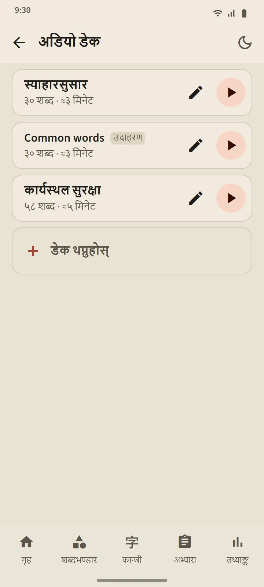

आफैँ बनाउने अडियो डेक
5 देखि 100 शब्दसम्मको डेक बनाउनुहोस्: एक-एक गरी खोज्नुहोस्, वा कुनै पनि शब्दावली डेकबाट एकैचोटि लिनुहोस्। प्लेयरले हरेक शब्द जापानीमा पढ्छ, त्यसपछि एपको भाषामा यसको अर्थ (जापानी मात्र चाहिए “अर्थ पनि पढेर सुनाउनुहोस्” बन्द गर्नुहोस्)। हालको शब्द फुरिगानासहित ठूलो देखिन्छ; सूचीको कुनै शब्दमा ट्याप गरेर त्यहाँ जानुहोस्।
नियन्त्रण: मिसाउने, दोहोर्याउने, र 0.75×, 1× वा 1.25× गति। स्क्रिन बन्द हुँदा वा अर्को एपमा जाँदा पनि प्लेयर चलिरहन्छ; प्लेयरको सूचना र हेडसेटका बटनले नियन्त्रण गर्न मिल्छ।
- निःशुल्क संस्करण: 3 डेक। Premium: असीमित, र डेकलाई एउटै अडियो फाइल (M4A) को रूपमा डाउनलोड गर्न सकिन्छ।
- “Common words” नाम गरेको नमुना डेक सबैभन्दा बारम्बार आउने शब्दबाट आफैँ बन्छ; चाहे जस्तै सम्पादन वा मेटाउन सकिन्छ।
- सुन्दा शब्दको तालिका वा चरण कहिल्यै बदलिँदैन।


बोल्ने अभ्यास: बोल्नुहोस्, अनि अघि बढ्नुहोस्
तपाईंलाई थाहा भयो वा निपुण भएको शब्द कार्डमा देखिन्छ; माइक्रोफोन आफैँ खुल्छ, तपाईं शब्द बोल्नुहुन्छ, र फोनले चिन्यो भने अर्को शब्द आउँछ। चिनेन भने स्क्रिनले के सुन्यो देखाउँछ र फेरि सुन्छ; तीन प्रयासपछि उदाहरण बजाउँछ। माइक्रोफोन बटन, उदाहरण बटन र छोड्नुहोस् सधैँ हुन्छन्। एक सत्रमा 5, 10, 15 वा 20 शब्द हुन्छन्।
तपाईंको आवाज फोनको स्पिच-रिकग्निसन सेवा (प्रायः Google को) ले प्रशोधन गर्छ; एपले यसलाई रेकर्ड वा सुरक्षित गर्दैन। शब्द मात्र जाँचिन्छ, तपाईंको लवज होइन। स्पिच-रिकग्निसनले गलत सुन्न सक्ने भएकाले यो अभ्यासले शब्दको चरण कहिल्यै घटाउँदैन।

कान्जी लेखन: स्ट्रोक-स्ट्रोक
तपाईंलाई थाहा भयो वा निपुण भएका कान्जीका लागि। अर्थ र पठन मात्र देखिन्छ; तपाईं पूरा चौडाइको बक्समा लेख्नुहुन्छ, र औँला उठाउँदा हरेक स्ट्रोक जाँचिन्छ: आकार, दिशा र क्रम। सही स्ट्रोक मानक आकारमा बस्छ; गलत क्रम वा उल्टो दिशा एउटा वाक्यमा अस्वीकार गरिन्छ; दुई पटक चुकेपछि अर्को स्ट्रोक सुरु बिन्दुसहित धमिलो देखिन्छ।
- सम्झनाबाट: खाली बक्स। छायासहित: कान्जी धमिलो देखिन्छ, सुरुमा अभ्यास गर्न। क्रमअनुसार ट्याप: कान्जी पूरा देखिन्छ; यसका स्ट्रोक क्रमअनुसार ट्याप गर्नुहोस्।
- एनिमेसन बटनले जुनसुकै बेला पूरा कान्जी लेखिँदै गरेको देखाउँछ।
- कान्जी दुई फरक दिन सहायताबिना सम्झनाबाट लेखेपछि लेख्न सकिने गनिन्छ; एक सत्रमा 5, 10 वा 15 कान्जी।


जताततै उच्चारण
शब्दावली कार्ड, कान्जी कार्ड, शब्दको विवरण, काना पाठ, व्याकरणका उदाहरण र सुनाइका प्रश्न सबै तपाईंको फोनको जापानी text-to-speech इन्जिनले पढ्छ, त्यसैले कुनै अडियो फाइल डाउनलोड गर्नु पर्दैन। आवाजको गुणस्तर हरेक फोनको इन्जिनमा निर्भर हुन्छ।